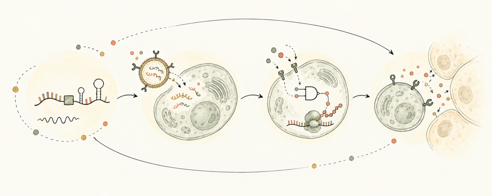

mRNAx
Design, fold, and verify RNA sequences with AI agents, then export cleanly to GenBank or FASTA.

I use AI to work through hard problems and build tools I can test.

Can a therapy sense what a cell is doing, act when needed, and switch off in time?
Design, fold, and verify RNA sequences with AI agents, then export cleanly to GenBank or FASTA.
An interactive map linking 14 core biology mechanisms, 22 biotech platforms, and 38 drug modalities.
24 Chinese essays on pioneers in synthetic biology and biomedicine, with original diagrams and visual cards.
PhD, Tsinghua University (2026)
Incoming postdoctoral fellow, School of Biomedical Sciences, HKUMed
I design RNA that responds to cell state, moving next into immune regulation.
I also write about AI, biology, and attention.